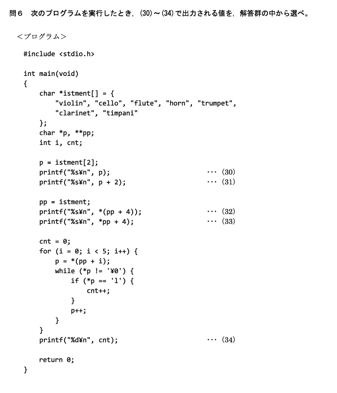
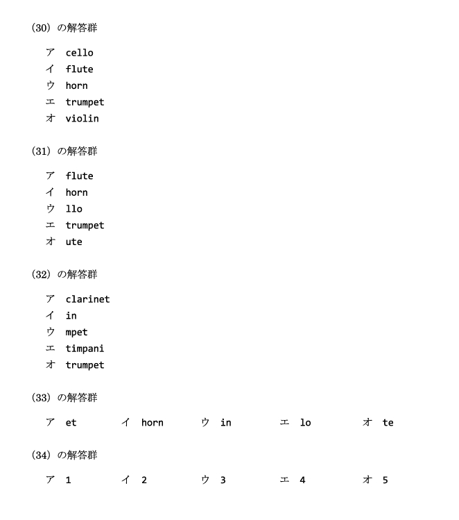
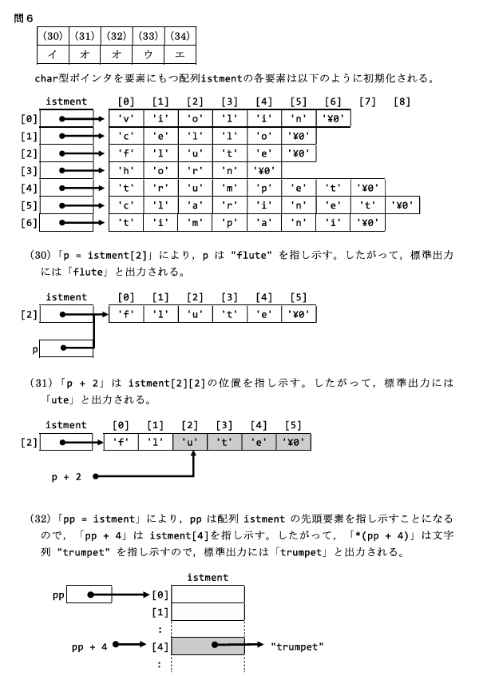
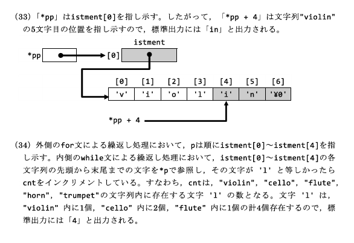

ポインタは「アドレスを格納する変数」である。データそのものではなく、データが置かれているメモリ上の位置（アドレス）を扱う。配列名が先頭アドレスを表すこと、*(p+1) と (*p+1) の違い、多重ポインタ int ** まで、2級で最も差がつく単元である。
*p＝中身、と説明できる ② &（アドレス演算子）と *（宣言時／間接参照の2用法）を区別できる ③ 配列名＝先頭アドレス、要素番号＝先頭からの距離が分かる ④ *(p+1) と (*p+1) の違いを言える ⑤ 多重ポインタ int **pp とポインタ配列 char *[] が読める。
「ポインタ」は指し棒をイメージすると分かりやすい。ポインタは「データそのもの」ではなく、データが格納されている「アドレス」を扱う。
変数や配列はメモリ上に配置される。メモリ上に置かれるということは、そこには必ず「アドレス」が存在する。C言語ではこのアドレスを特殊な変数に格納し、そのアドレスが指す先のデータを参照できる。これが「ポインタ」の仕組みである。
&ポインタ変数とは、他の変数やデータの「アドレス」を格納できる変数である。データそのものではなく、メモリ上の位置を操作できる。
int num = 3;
int *p;
p = # /* num のアドレスをポインタ変数 p に格納 */ここで p は num のアドレスを保持し、*p で num の値を参照できる。
&&（アンパサンド）を変数の前につけると、「その変数が格納されたメモリアドレス」になる。
int num = 3;
int *p = # /* &num ＝ num のアドレス。それを p に代入 */int *p = # で p に入るのは num のアドレス（num の値「3」ではない）。
* の2つの意味アスタリスク * には2つの使い方がある。同じ記号なので混同しやすいが、出てくる場所で見分ける。
| 用法 | 意味 | 例 |
|---|---|---|
型修飾子としての * | 「ポインタ変数」を宣言する（〜へのポインタ型） | int *p; |
間接参照演算子としての *（デリファレンス） | ポインタが指すアドレスの「中身（値）」を取り出す | *p |
*）int num = 3;
int *p = # /* num のアドレスをポインタ p に代入 */p は「整数型データへのポインタ」。*）int num = 10;
int *p = # /* num のアドレスを p に格納 */
printf("%d¥n", *p); /* 10 を出力（p が指す先の中身） */*p は、ポインタ p が指しているアドレスのデータ（中身）を表す。p（ポインタ変数そのもの）＝ アドレス＝うつわ*p（間接参照）＝ うつわの中身
宣言 int num = 3; int *p = # はメモリ上で次のようになる。
メモリ位置例 | データ
-------------+------------
num 0xFFFF1230 | 3 (num の値)
p 0xFFFF4560 | 0xFFFF1230 (p に格納されたアドレス＝num の位置)つまり p の中身は 0xFFFF1230（num のアドレス）、*p はそのアドレスの中身 3 になる。
int *p; /* 整数型へのポインタ */
char *str; /* 文字型へのポインタ */int x = 20;
int *p = &x; /* x のアドレスを p に格納 */p は x のアドレスを持つ。int *、文字型を指すなら char *。*p は x の値（20）を参照する。宣言 int x = 20; int *p = &x;
メモリ位置例 | データ
-------------+------------
x 0xFFFF1200 | 20 (x の値)
p 0xFFFF1250 | 0xFFFF1200 (p に格納されたアドレス)int *p; だけ）で *p を読み書きすると、どこを指しているか分からない（未初期化）ため未定義動作になる。必ず &変数 などで初期化してから使う。
配列とアドレスは密接な関係がある。最重要ルールは 「配列名は、その配列の先頭アドレス」 である。
int arr[3] = {1, 2, 3};
printf("%p¥n", arr); /* 配列の先頭アドレス */
printf("%p¥n", &arr[0]); /* 同じ値（先頭要素のアドレス） */ メモリ位置 | データ
-----------+---------
0xFFFF1300 | 1 ・・・ arr[0] = 1 （arr = 0xFFFF1300）
0xFFFF1304 | 2 ・・・ arr[1] = 2
0xFFFF1308 | 3 ・・・ arr[2] = 3arr はアドレス値 0xFFFF1300 を表す。arr と &arr[0] は同じ（どちらも先頭アドレス）。
要素番号は、先頭アドレスからの「距離」である。
int arr[3] = {1, 2, 3};
printf("%p¥n", &arr[1]); /* 先頭から1つ分進んだアドレス = 0xFFFF1304 */
printf("%d¥n", arr[1]); /* 先頭から1つ分進んだアドレスの中身 = 2 */int 型を4バイトとすると、arr の各要素は4バイト。要素を1つ先に進めると、アドレスは4つずつ飛ぶ。
*(p+1) と (*p+1) の違い）アドレスに対して +1 すると、そのデータ型のバイト数だけ加算されたアドレスを自動計算する（int * なら +4 バイト）。
int arr[3] = {10, 20, 30};
int *p = arr;
printf("%d¥n", *(p + 1)); /* 20 を出力 */ メモリ位置 | データ
-----------+---------
0xFFFF1400 | 10 ・・・ arr[0] = 10 （arr = 0xFFFF1400）
0xFFFF1404 | 20 ・・・ arr[1] = 20 （arr+1 = 0xFFFF1404）
0xFFFF1408 | 30 ・・・ arr[2] = 30 （arr+2 = 0xFFFF1408）順を追って整理する。
arr ＝ 0xFFFF1400、arr+1 ＝ 0xFFFF1404、arr+2 ＝ 0xFFFF1408（いずれもアドレス）*arr ＝ 10、*(arr+1) ＝ 20、*(arr+2) ＝ 30（* で中身になる）p + 1 は p の次の要素を指す ＝ 0xFFFF1404*(p + 1) は p の次の要素の中身を取得する ＝ 20(*p + 1) は p の中身（10）を先に取り出して +1 したもの ＝ 11*(p + 1) … アドレスを +1 してから中身 → arr[1] ＝ 20(*p + 1) … 中身（arr[0]＝10）を取り出してから +1 → 11
データに対する演算（参照した「値」に対して演算する）：
int x = 5;
int *p = &x;
(*p)++; /* x の値が 6 になる（中身を取り出して +1） */ポインタに対する演算（ポインタ自体を動かすと次のメモリ位置を指す）：
int arr[3] = {10, 20, 30};
int *p = arr;
p++; /* 次の要素を指す */
printf("%d¥n", *p); /* 20 */混乱しやすい例（アドレスと値の違い）：
int arr[3] = {1, 2, 3};
int *p = arr;
printf("%p¥n", p); /* アドレスを出力 */
printf("%d¥n", *p); /* 値（1）を出力 */
printf("%d¥n", *(p+1)); /* 次の値（2）を出力 */配列名が先頭アドレスである性質は、文字列（char 配列）でも同じ。ポインタ経由で中身を書き換えることもできる。
#include <stdio.h>
int main(void)
{
char str[] = "Hello";
char *p = str;
*(p + 1) = 'a'; /* 2文字目（index 1）を 'a' に変更 */
printf("%s¥n", str); /* 出力: Hallo */
return 0;
}str の内容 "Hello" の e（index 1）を a に書き換えるので、結果は Hallo になる。
char *p = str; は「p に str の先頭アドレスを入れる」。*(p+1) は str の2文字目そのもの（同じメモリ）なので、代入すると元の str が変わる。
int **）ポインタが別のポインタ変数を指す場合、この関係を多重ポインタと呼ぶ。多重ポインタはポインタ自体のアドレスを保持し、間接的にデータを参照する。
int a = 10;
int *p = &a; /* p は a のアドレスを保持するポインタ */
int **pp = &p; /* pp は p のアドレスを保持するポインタ（多重ポインタ） */| 変数 | 値 | 説明 |
|---|---|---|
a | 10 | 通常の整数型変数の値 |
p | &a | a のアドレスを保持するポインタ |
pp | &p | p のアドレスを保持するポインタ（多重ポインタ） |
#include <stdio.h>
int main(void)
{
int a = 10;
int *p = &a; /* p は a を指す */
int **pp = &p; /* pp は p を指す */
/* 値の出力 */
printf("a: %d¥n", a); /* 直接アクセス → 10 */
printf("*p: %d¥n", *p); /* p を介してアクセス → 10 */
printf("**pp: %d¥n", **pp); /* pp を介して間接アクセス → 10 */
/* アドレスの出力 */
printf("&a: %p¥n", (void *)&a); /* a のアドレス */
printf("p: %p¥n", (void *)p); /* p に格納されているアドレス */
printf("*pp: %p¥n", (void *)*pp); /* pp を介して得た p の中身（＝a のアドレス） */
return 0;
}a: 10
*p: 10
**pp: 10
&a: 0x7ffee7e5a97c
p: 0x7ffee7e5a97c
*pp: 0x7ffee7e5a97cpp は p のアドレス、*pp は p の中身（＝a のアドレス）、**pp はそのまた中身（＝a の値 10）。* を1つ外すごとに「1段だけ中身に潜る」と覚える。
char *[]）文字列（の先頭アドレス）をまとめて持つにはポインタ配列 char *[] を使う。各要素が「文字列の先頭アドレス」になる。配列名は先頭を指すので char ** で受けられる。
#include <stdio.h>
int main(void)
{
char *instruments[] = {"violin", "cello", "flute", "horn"};
char **ptr = instruments; /* 配列の先頭アドレスを指すポインタ */
int i;
for (i = 0; i < 4; i++) {
printf("%s¥n", *(ptr + i)); /* 各要素（文字列）を出力 */
}
return 0;
}ptr は instruments 配列の先頭を指し、ポインタ演算 *(ptr + i) で各文字列を順に取り出す。
同じ考え方の例（こちらも char ** でポインタ配列の先頭を受ける）：
#include <stdio.h>
int main(void)
{
char *strings[] = {"apple", "banana", "cherry"};
char **ptr = strings; /* ポインタ配列の先頭を指す */
int i;
for (i = 0; i < 3; i++) {
printf("%s¥n", *(ptr + i));
}
return 0;
}多重ポインタは動的メモリ管理や2次元配列の操作にも使える。「ポインタの配列」を確保し、その各要素にさらに行を確保する。やや難しいので、まずは「int ** で行を、int * で各行を確保する」という形だけ押さえればよい。
#include <stdio.h>
#include <stdlib.h>
int main(void)
{
int rows = 2, cols = 3;
int **matrix;
int i, j;
matrix = (int **)malloc(rows * sizeof(int *)); /* 行ぶんのポインタを確保 */
for (i = 0; i < rows; i++) {
matrix[i] = (int *)malloc(cols * sizeof(int)); /* 各行を確保 */
for (j = 0; j < cols; j++) {
matrix[i][j] = i + j;
}
}
for (i = 0; i < rows; i++) {
for (j = 0; j < cols; j++) {
printf("%d ", matrix[i][j]);
}
printf("¥n");
}
for (i = 0; i < rows; i++) {
free(matrix[i]); /* 各行を解放 */
}
free(matrix); /* 行ポインタの配列を解放 */
return 0;
}free で解放する（メモリリーク防止）。確保した順と逆順で、各行を解放してから matrix 本体を解放する。
free で解放する。



p はアドレス（器）、*p は中身。&＝アドレス演算子。* は宣言時＝型修飾子／式中＝間接参照の2用法。arr ＝ &arr[0]）。要素番号＝先頭からの距離。*(p+1)＝次の要素の中身、(*p+1)＝中身を取り出して +1。カッコで意味が変わる。int * なら4バイト）。int **pp：* を外すごとに1段ずつ中身へ。ポインタ配列 char *[] は char ** で受ける。Q1. int num = 5; int *p = # のとき、p に格納されるものはどれか。
正解：ウ（num のアドレス）
&num は num のアドレス。ポインタ変数 p にはアドレスが入る（値「5」が入るわけではない）。num の値を取り出したいときは *p とする。
Q2. int arr[3] = {10, 20, 30}; int *p = arr; のとき、*(p + 1) の値はどれか。
正解：イ（20）
p は arr の先頭（arr[0]）を指す。p + 1 は次の要素 arr[1] のアドレス。*(p + 1) はその中身なので 20。
Q3. 同じく int arr[3] = {10, 20, 30}; int *p = arr; のとき、(*p + 1) の値はどれか。
正解：エ（11）
カッコが先頭にあるので、まず *p（arr[0] の中身＝10）を取り出し、それに +1 する。よって 11。*(p+1)（＝20）との違いに注意。
Q4. 次のコードの実行後、str の内容はどれか。
char str[] = "Hello";
char *p = str;
*(p + 1) = 'a';
printf("%s¥n", str);正解：イ（Hallo）
p は str の先頭を指す。*(p + 1) は str の2文字目（index 1 ＝ 'e'）そのもの。そこへ 'a' を代入するので "Hallo" になる。
Q5. int a = 10; int *p = &a; int **pp = &p; のとき、**pp の値はどれか。
正解：ア（10）
pp は p のアドレス、*pp は p の中身（＝a のアドレス）、**pp はそのまた中身（＝a の値）。よって 10。* を外すごとに1段ずつ中身へ潜る。
Q6. 配列名 arr（int arr[5];）が表すものはどれか。
正解：ウ（先頭アドレス）
「配列名は、その配列の先頭アドレス」。arr と &arr[0] は同じ値になる。だから int *p = arr; のように、配列名をそのままポインタに代入できる。
Q7. int 型を4バイトとする。int *p; に対して p + 1 は、p から何バイト進んだアドレスになるか。
正解：ウ（4バイト）
ポインタの +1 は「指す型のサイズぶん」進む（自動計算）。int *（4バイト）なら +4 バイト、char *（1バイト）なら +1 バイト、double *（8バイト）なら +8 バイト。だから *(p+1) がちょうど隣の要素を指す。
Q8. 宣言 char *strings[] = {"apple", "banana", "cherry"}; の各要素 strings[0] が表すものはどれか。
正解：エ（"apple" の先頭アドレス）
char *[] はポインタ配列で、各要素が「文字列の先頭アドレス（char *）」。strings[0] は "apple" の先頭を指すので printf("%s", strings[0]); で "apple" を表示できる。配列全体の先頭は char ** で受けられる。